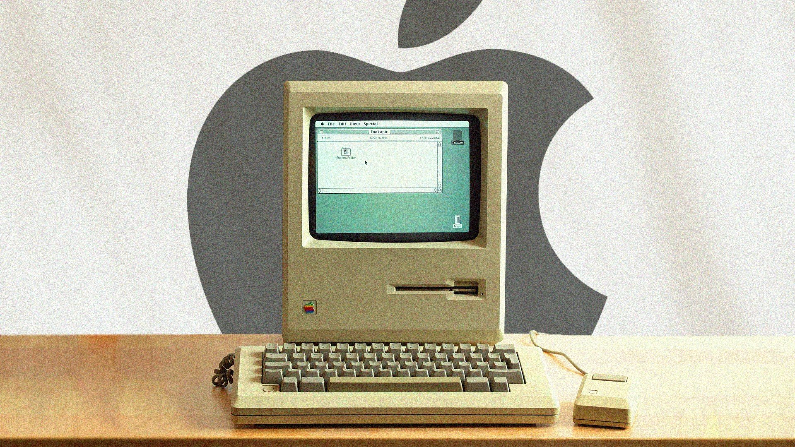
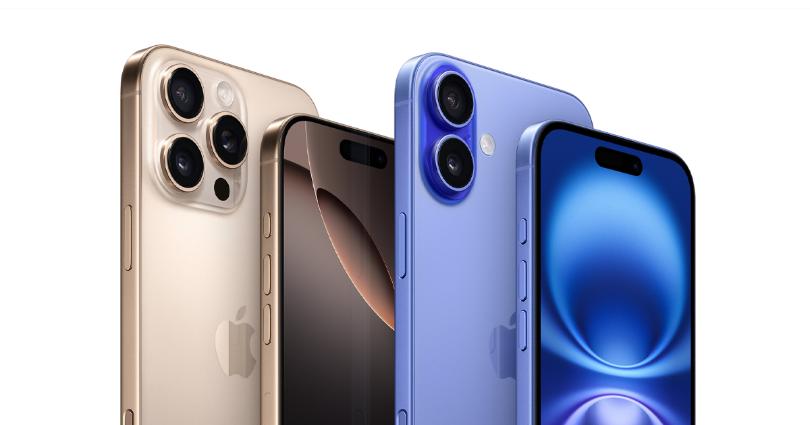

História da Apple
A Apple é uma das maiores empresas de tecnologia do planeta. Ela foi fundada no dia 1º de abril de 1976 por Steve Wozniak, Steve Jobs e Ronald Wayne a fim de começar a produzir e vender seu primeiro produto: o computador Apple I, criado por Wozniak.
Apple-1
O primeiro computador da empresa da maçã, o Apple 1, chegava a 11 de abril, começando a ser comercializado em julho desse ano. Embora descontinuado em outubro de 1977. Foi descontinuado em outubro de 1977.
o modelo ficará certamente na História como uma das primeiras aproximações ao conceito de computador pessoal a chegar ao mercado.
O maior sucesso
Jobs foi uma das grandes mentes por trás das inovações tecnológicas da empresa, sem falar que ele também foi um dos principais responsáveis pelo marketing bem-sucedido da companhia.

O iPhone é certamente o produto mais conhecido da Apple e também é o aparelho responsável por transformar o mercado de celulares. Tudo isso porque ele reuniu, em um só local, diversas tecnologias já existentes na época do seu lançamento.
Com o lançamento do iPhone, a Apple deixou de ser apenas uma fabricante de computadores e passou a ser uma empresa de tecnologia de consumo.